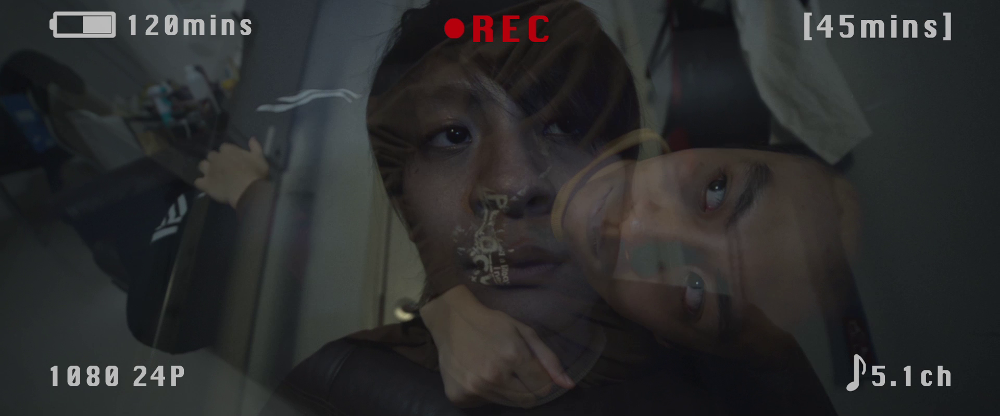
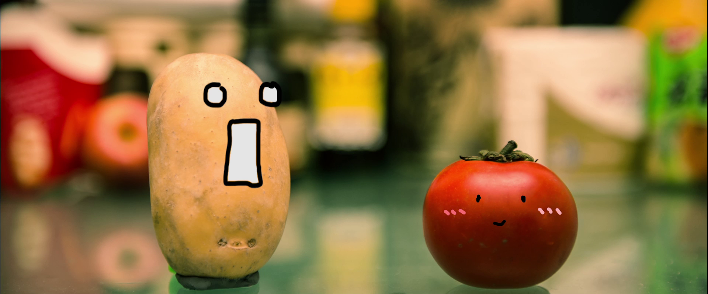

About Pomato
Our Works
Equipment
Contact
Contest
《 One more time 》‘A Place For You’ Video Contest by m21 - Tertiary Students Division (Gold)
《 Copycat 》HK and Taiwan "My Video" Competition - Tertiary Students Division (Bronze)

《 No Battery, No Memory 》納米電影創作比賽 by HKAYD - Nominated
javascript
Video for fun

《 Pomato 》Stop-motion video, a love story of a tomato and a potato.
《 Last Step 》Test video of VFX.
javascript